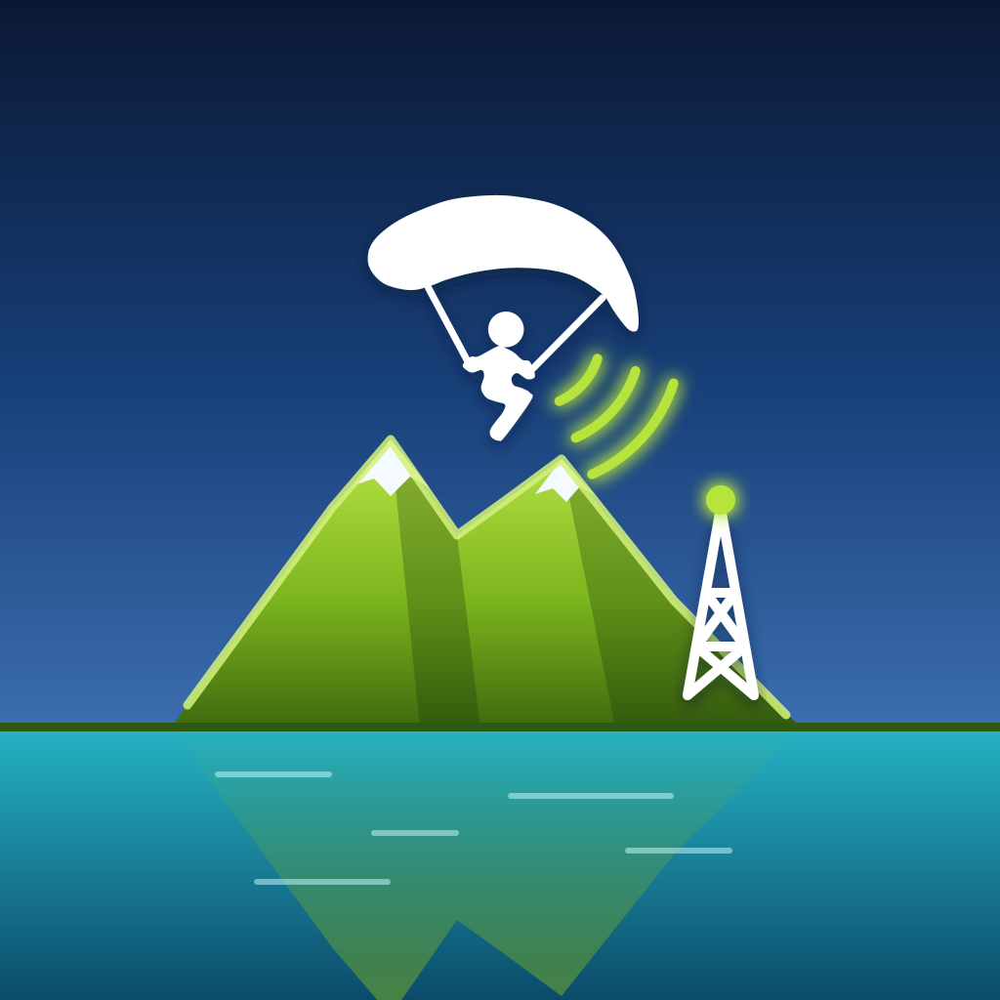

AeroTrackIl transmet la position du pilote à la FFVL (VLSafe), même sans réseau mobile, par une station base et le relais entre pilotes, et le rend visible sur le réseau OGN.
Pour mettre une carte à jour depuis sa page de réglages par le WiFi (iPhone, ordinateur : 3 appuis sur le bouton), téléchargez d'abord ici, avec Internet, le fichier au nom de votre carte.